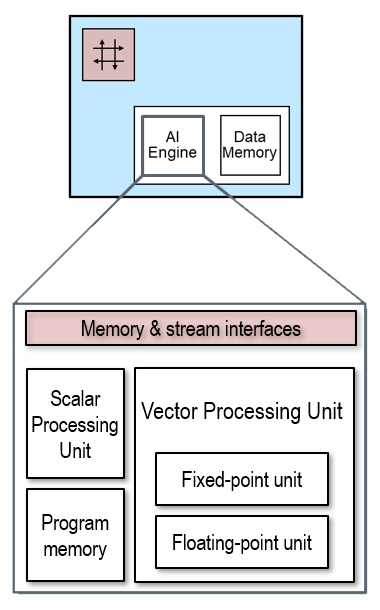

How to Use the Vector Processing Units¶
Goals¶
Introduce AI Engine vector operations within a user-defined kernel
Develop our first single instruction multiple data path (SIMD) application
Achieve better performance when changing the run-time parameters (RTPs) during application execution
References¶
Single Instruction Multiple Data (SIMD)
Vectorization¶
Vectorization is a technique that allows a computer processor to perform the same operation on multiple data elements simultaneously, using a single instruction. This is supported by the SIMD architecture of the AI Engines in the NPU compute tiles. SIMD stands for Single Instruction, Multiple Data.
A vector represents a collection of data elements of the same type. A SIMD instruction is a single instruction that is executed simultaneously on multiple data elements. In other words, it processes vectors using a single operation.
Vectorization is the process of transforming scalar operations (operations on individual data elements) into vector operations (operations on vectors). Instead of processing one data element at a time, vectorization enables the CPU to work on a batch of data elements in parallel. This approach leverages parallelism to improve the computational efficiency of tasks that involve the same operations on a set of data, such as arrays or vectors.
We will show how the benefits of SIMD data parallelism are achieved with the AI Engine’s vector processor unit, shown below.

AIE-ML Architecture
The vectorization factor is the number of data lanes in the vector unit. It corresponds to the number of scalar iterations that can be performed by each vector instruction. The vector processing unit (VPU) data path is 512-bits wide. It has 64 lanes for 8-bit data types, 32 lanes for 16-bit types or 16 lanes for 32-bit types. The VPU’s vectorization factor is configurable to accommodate the different widths of different data types.
Introduction to the AI Engine API¶
The previous examples used C++ code with no special APIs. C/C++ have limited built in support for vector processing. We will use the AI Engine API which support the vector architecture of the processor.
You can read more details in the AIE API reference manual
To get started we need to understand the load and store vector APIs, and the arithmetic vector APIs.
Load/Store and Vector APIs¶
Input and output data to software kernels running on AI Engines are stored in memory buffers in the local data memory of the compute tiles. Pointers provide the software kernel with access to the data buffers. On an AI Engine, the software kernel can read data from the input buffer pointer as a vector. This loads the inputs into special vector registers in the Vector Processing Unit. In the AI Engine, the output from the VPU is also stored in special vector registers, which can be written back to the output memory buffer as a vector.
The AI Engine VPU can perform up to two load and one store operations from local data memory per clock cycle. If you are unfamiliar with the terms load and store, a load is a read from memory, and a store is a write to memory. The data path for each of these load and store operations is 256-bit wide. This means we can load 512-bit of data and store 256-bit of data in one cycle.
We can use the following APIs to load and store vectors:
::aie::load_v<N>(pointer): AIE Store vector operator documentationloads a vector of
Nelements from the inputpointerand returns a vector ofNelements of the underlying type ofpointer.
::aie::store_v(pointer, vector): AIE Store vector operator documentationstores a
vectorinto the buffer in data memory associated to the outputpointer.
We must use vector data types with these APIs. To declare a vector data type we can use the following:
::aie::vector<<type>, <vector length>> vector_name: AIE vector data type documentationCreates a vector of the specified type and length
You will see these APIs used in the next software kernel we will build.
Data should be 128-bit aligned to get maximum performance. Data aligned on different boundaries will not be loaded/stored in a single operation.
Operating on Vectors¶
The AI Engine APIs support the following vector operations:
Arithmetic - E.g., adding, subtracting, multiplying, accumulating, bitwise.
Comparison - E.g., less than, greater than, equals/not equals.
Reduction - E.g., reduction add, min, max.
Reshaping - E.g., select, filter, interleave, shuffle.
You can follow the links for more details, but this is not necessary at this stage.
These APIs will be demonstrated in the software kernel code in the next examples.
Vectorizing the pass-through Kernel¶
To make a vectorized version of the pass-through application that we saw in earlier notebooks, we write the following C++ code:
void passthrough_vectorized(uint8_t *in_buffer, uint8_t *out_buffer, uint32_t nbytes){
// a buffer to temporarily store our vector
::aie::vector<uint8_t, 64> buffer;
// divide by vectorization factor (64)
uint32_t loop_count = nbytes >> 6;
for(int i=0; i<loop_count; i++) {
// load 32 elements into the buffer
buffer = ::aie::load_v<64>(in_buffer);
// store buffer into the out buffer
::aie::store_v<64>(out_buffer, buffer);
// We need to increment the buffers by 32 each iteration now
in_buffer += 64;
out_buffer += 64;
}
}
Explaining the code¶
The C++ code defines a function named passthrough_vectorized() that operates on arrays of 8-bit unsigned integers (uint8_t). Like the first passthrough example we saw, this function copies data from an input buffer to an output buffer in a vectorized manner, without any other processing. By vectorizing this example, it processes data in chunks of 64 elements at a time for improved performance. Breaking this code down line by line:
Declare a vector¶
::aie::vector<uint8_t,64> buffer;
This line declares a vector named buffer, which can hold 64 elements of uint8_t type.
Calculate the number of loop iterations¶
uint32_t loop_count = nbytes >> 6;
This line calculates the number of iterations required to process the data. It shifts the nbytes (number of bytes) to the right by 6 bits, effectively dividing it by 64 (26). This determines how many 64-element chunks there are in the data to be processed.
Create a loop and load input data¶
for(int i=0; i<loop_count; i++) {
This initiates a loop that will run loop_count times, with i as the loop counter
buffer = ::aie::load_v<64>(in_buffer);
Inside the loop, this line loads 64 elements from the in_buffer into the buffer. The load vectorized operation is provided by the ::aie:: library. It effectively copies 64-Byte from the data memory to one of the vector registers of the NPU array.
Store the result¶
::aie::store_v<64>(out_buffer, buffer);
The input is loaded into a vector register in the VPU. For this passthrough software kernel, the input passes unmodified through the VPU. The ::aie::stores_v writes the result from the vector registers back to the output memory buffer. The store operation effectively copies the 64 elements from the VPU to the local data memory.
Increment the counters¶
input_buffer += 64;
output_buffer += 64;
After processing a chunk of 64-element, both buffer pointers are incremented by 64 to prepare for the next chunk of data.
Vectorized software kernel conclusion¶
The function continues the loop until it has processed all the data in nbytes. The use of vectorized operations allows load and store access and copying, as it operates on larger data chunks at a time. This will result in significant performance improvements compared to scalar processing (processing one element at a time).
Writing a Vectorized Threshold Kernel¶
Rather than build the simple passthrough kernel, we will go straight to a vectorized threshold kernel.
The overall objective of a vectorized threshold kernel is to implement the same threshold functionality we saw in an earlier example, but parallelized so that it can process multiple pixels in each iteration. This will significantly reduce the time the kernel needs to iterate in its innermost loop, resulting in a noticeable speed-up.
Each RGBA pixel is 4-Byte so we choose a vector data type of length 32-bit to represent each pixel in our compute tile. Since our vector processing is 512-bit wide, we can now process 16 RGBA pixels per operation.
Start by importing the npu package:
[1]:
import npu
This kernel will have the same functionality as the kernel defined in the previous notebook but with vector operations replacing the scalar operations.
The primary AI Engine API operations we will use are:
::aie:: call |
Operation Performed |
|---|---|
::aie::load_v<>() |
Vector load |
::aie::store_v() |
Vector store |
::aie::broadcast<>() |
Replicate arg_1 in each data lane of vector in arg_2. We will use this to pass the RunTime ‘threshold’ parameter to each data lane |
::aie::zeros<>() |
Create a vector of zeros with the specified number of lanes and data type |
::aie::lt<>() |
Vector less than comparison |
::aie::mask<>() |
Vector compare arg1 with arg2 with resulting Boolean mask in arg3 |
::aie::select() |
Select arg1 or arg2 based on mask in arg3 |
Let us look at the different portions of our kernel to explore how this works. The completed software kernel code is provided here:
[2]:
%%kernel
void threshold_vec(uint8_t *in_buffer, uint8_t *out_buffer,
uint32_t nbytes,
uint8_t r_threshold, uint8_t g_threshold, uint8_t b_threshold)
{
// Vector lanes
const uint8_t vector_lanes = 64;
// Value of saturated pixels
const uint8_t saturated = 255;
// Declare 512-bit wide vectors
::aie::vector<uint8_t, vector_lanes> input_pixels;
::aie::vector<uint8_t, vector_lanes> output_pixels;
::aie::vector<uint8_t, vector_lanes> threshold_vector;
::aie::vector<uint8_t, vector_lanes> saturation_vector;
::aie::vector<uint8_t, vector_lanes> zeros_vector = ::aie::zeros<uint8_t, 64>();
// Broadcast saturated value into all 64 lanes of saturation_vector
saturation_vector = ::aie::broadcast<uint8_t, vector_lanes>(saturated);
// Create a new uint32 for the pixel threshold values, and concatenate the RTP values
uint32_t pixel_rtps32;
pixel_rtps32 = (uint32_t)b_threshold << 16 |
(uint32_t)g_threshold << 8 |
(uint32_t)r_threshold;
// Broadcast threshold values into the kernel 32-bit at a time
threshold_vector =::aie::broadcast<uint32_t, 16>(pixel_rtps32).cast_to<uint8_t>();
// Vectorized thresholding loop
uint16_t loop_count = (nbytes) >> 6;
for(int j=0; j<loop_count; j++) {
// Vector load pixels and mask
input_pixels = ::aie::load_v<vector_lanes>(in_buffer);
// Create 64-bit threshold status register
::aie::mask<64> threshold_status;
// Capture Boolean results of thresholding
threshold_status = ::aie::lt(threshold_vector, input_pixels);
// Vector select actual pixel values using threshold_status as mask
output_pixels = ::aie::select(zeros_vector, saturation_vector, threshold_status);
// Vector store thresholded pixels in output buffer
::aie::store_v(out_buffer, output_pixels);
// Advance buffer pointers by vectorization factor
in_buffer += vector_lanes;
out_buffer += vector_lanes;
}
}
Examining the Kernel¶
The vectorized kernel code above looks different from those in the previous notebooks. It uses APIs from the AI Engine library ::aie to perform vector operations. To explain this kernel, we are going to break it up into two main parts:
The initialization, i.e., the bit before the for loop.
The inner loop body, i.e., the bit inside the innermost loop.
Initialization¶
The majority of the computation work that the kernel performs is within the innermost loop; however, before we can get to that, we need to set up some vectors that we are going to use within that inner loop.
We start by defining some constants. The individual red, green and blue and alpha values of the pixel are 8-bit. We will use unsigned int8 as the vector data type so that we can operate on each pixel component. As the AI Engine datapath is 512-bit wide and supports 64 8-bit lanes, we define a constant for the number of lanes. Each pixel is 32-bit, so we will be able to process 16 pixels at a time.
We will also define a saturated value we will set pixel components to if it exceeds the threshold. 255 is the maximum value for an unsigned int8.
const uint8_t vector_lanes = 64;
const uint8_t saturated = 255;
Next, we declare vectors for the input, output, a threshold vector, and a saturation vector. Each of these vectors is 512-bit wide (64 lanes x 8-bit).
The saturation_vector will be used for the values that we want our pixels to be set to if they are over the threshold value. We will use the threshold_vector for the pixel-wise comparison in our inner loop.
// Declare 512-bit wide vectors
::aie::vector<uint8_t, vector_lanes> input_pixels;
::aie::vector<uint8_t, vector_lanes> output_pixels;
::aie::vector<uint8_t, vector_lanes> threshold_vector;
::aie::vector<uint8_t, vector_lanes> saturation_vector;
::aie::vector<uint8_t, vector_lanes> zeros_vector = ::aie::zeros<uint8_t, 64>();
The next line initializes the saturation_vector. This is done using the ::aie::broadcast() function, which copies or broadcasts the saturated value into each lane of the vector.
::aie::vector<uint8_t, 64> saturation_vector = ::aie::broadcast<uint8_t, 64>(saturated);
The next lines create a 32-bit unsigned int which will store the combined values from the individual 8-bit RGBA components. The values are combined by shifting and using a bitwise OR. Red is bits 0-7, green is bits 8-15, and blue is bits 16-23. The alpha channel is bits 25-31 but is not used so ORing with 0x0 ensures these bits are set these bits to zero.
uint32_t pixel_rtps32;
pixel_rtps32 = 0x0 |
(uint32_t)b_threshold << 16 |
(uint32_t)g_threshold << 8 |
(uint32_t)r_threshold;
The next line is a little complicated. We start from pixel_rtps32 to create the threshold_vector.
Broadcast will create a new temporary variable, and broadcast this to the threshold_vector. First, we broadcast 16x 32-bit combined RGBA values, but cast them back to uint8 types to fill the 64x 8-bit lanes of the threshold_vector.
// Broadcast threshold values into %%kernel 32 bits at a time
threshold_vector =::aie::broadcast<uint32_t, 16>(pixel_rtps32).cast_to<uint8_t>();
The threshold_vector vector will be compared with our input RGBA vector.
Inner loop body¶
The inner loop of our kernel is as follows:
uint16_t loop_count = (nbytes) >> 6;
for(int j=0; j<loop_count; j++) {
// Vector load pixels and mask
input_pixels = ::aie::load_v<vector_lanes>(in_buffer);
// Create 64-bit threshold status register
::aie::mask<64> threshold_status;
// Capture Boolean results of thresholding
threshold_status = ::aie::lt(threshold_vector, input_pixels);
// Vector select actual pixel values using threshold_status as mask
output_pixels = ::aie::select(zeros_vector, saturation_vector, threshold_status);
// Vector store thresholded pixels in output buffer
::aie::store_v(out_buffer, output_pixels);
// Advance buffer pointers by vectorization factor
in_buffer += vector_lanes;
out_buffer += vector_lanes;
}
Setup the loop counter and load input data¶
The first thing to notice about the inner loop is that the bounds have changed; we can see that it has been divided by 64 with the loop_count = nbytes >>6; as we are processing 64 lanes in parallel in our vector operations.
Inside the loop, we load into the input_pixels vector. A vector of 64-element is loaded from the input data buffer into input_pixels vector, based on the current location that in_buffer is pointing to, our input buffer pointer.
input_pixels = ::aie::load_v<vector_lanes>(in_buffer);
Notice we use the ::aie::load_v() vector load function. This is equivalent to reading a pointer in standard C, except doing this in C would require doing this 64 times for 8-bit types, or 16 times for 32-bit types.
Compare input vector against threshold and generate a mask¶
Next, we declare a 64-bit threshold_status mask. In the following line we use the aie::lt() which is a less than vector operation. Perform an element-wise less than operation between our new input vector input_pixels and the threshold vector threshold_vector we made in the initialization step to produce a 64-element mask vector. If the comparison is true, a 1 is written, or a 0 if the comparison is false.
::aie::mask<64> threshold_status;
threshold_status = ::aie::lt(threshold_vector, input_pixels);
Both these operations are shown visually below:
Loading and thresholding 16 RGBA pixels
Once we have a mask of the element-wise comparisons between our vector and our threshold values, we use it to select for the RGB channels of each pixel whether to set it to zero or to set it to the maximum value. The following lines from the inner loop above achieve this:
output_pixels = ::aie::select(zeros_vector, saturation_vector, threshold_status);
Selecting and writing 16 RGBA pixels
The output vector can then be written back to the output data memory buffer using ::aie::store_v()
::aie::store_v(out_buffer, output_pixels);
The last step is to increment the input and output pointers.
Build the Application¶
Let us build and run this new vectorized version and see if we get a smoother response in the output.
Run the cell below to build the application.
[3]:
import numpy as np
from npu.lib.graphs.graph_1ct import RGB720pBuilder
img_in = np.zeros(shape=(720,1280, 4), dtype=np.uint8)
img_out = np.zeros(shape=(720,1280, 4), dtype=np.uint8)
app_builder = RGB720pBuilder(kernel=threshold_vec)
app_builder.build(img_in, img_out)
Using cached threshold_vec kernel object file...
Building the xclbin...
Successfully Building Application... threshold_vec.xclbin & threshold_vec.seq delivered
Run the Application¶
Now that our application is built, let us look at the output.
[4]:
from npu.lib.graphs.image_looper_720p import ImageLooper720p
app = ImageLooper720p(img='images/jpg/ryzenai_future_starts_now.jpg',
xclbin='threshold_vec.xclbin',
rtps={"r_threshold" : { "type": "slider", "value": 0, "min": 0, "max" : 255},
"g_threshold" : { "type": "slider", "min": 0, "max" : 255},
"b_threshold" : { "type": "slider", "min": 0, "max" : 255}})
[5]:
app.start()
The response to changes in the RTPs are now much smoother thanks to vectorizing the kernel.
Vectorization help us achieve real-time performance for this video processing application.
Next Steps¶
In the next notebook we will learn how to use the AppBuilder class to create your own custom dataflow graph that can run in the NPU.
Copyright© 2023 AMD, Inc
SPDX-License-Identifier: MIT